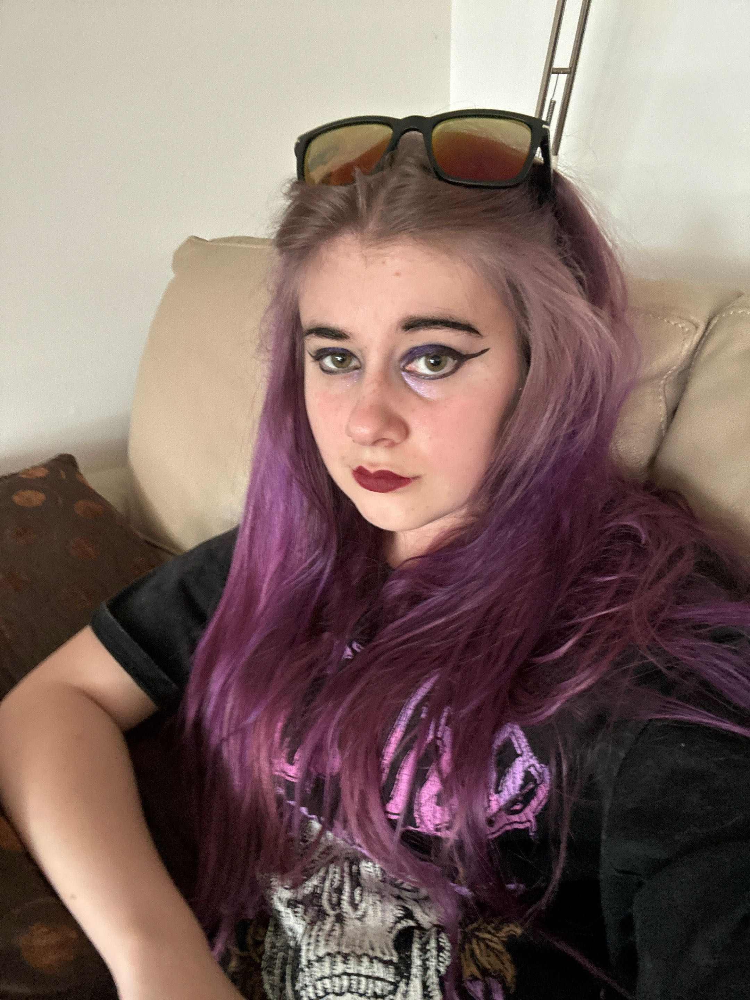

3D / VIRTUAL PRODUCTION
Unreal Engine environments, Sequencer, scene lighting, animated plates, and digital actor integration for LED workflows
Creative Arts student · Unreal Engine environments · Photogrammetry · Virtual production · Digital design
Bachelor of Creative Arts, Bond University (2021 – June 2026) · Gold Coast, QLD

Emerging creative arts practitioner with hands-on experience in Unreal Engine environments, photogrammetry-based workflows, virtual production, 3D modelling, film production, web design, and interactive media.
Recent work includes a Bond University virtual production underwater-facility environment for a multimedia short, scan-to-Unreal digital locations, Maya and Unreal environment components, and a Character.AI presence with 1.6M+ account-level interactions on Character.AI as @Doinkadoink — plus two portfolio-style websites built in 2025.
I am seeking an industry placement where I can contribute to digital locations, practical-to-digital workflows, and collaborative pipelines (for example with Myriad Studios–style digital location and VP work). I value clear visual communication, documentation, iteration from feedback, and accessible layout thinking.
Unreal Engine environments, Sequencer, scene lighting, animated plates, and digital actor integration for LED workflows
Photogrammetry principles, Scaniverse-style capture, scan cleanup awareness, and digital location reconstruction in Unreal
Maya, Unity, introductory C#, asset preparation, and cinematic scene construction
HTML, CSS, UI/UX and accessible design thinking, Figma, and beginner JavaScript for portfolio-style sites
Adobe Photoshop, Illustrator, and InDesign — posters, short magazines, layout, and publication design
Storytelling and previs thinking, collaboration, practical-to-digital translation, documentation, and resilient troubleshooting
Group short (~1:34) on an LED volume with motion-tracked Unreal plates — Rachel built the full underwater environment, Blueprint animation, lighting, and off-actor renders (3 weeks, intensive digital pipeline).
Home Scaniverse scan → Unreal cleanup and flythrough (on & on & on & on, ~54s loop) — plus broader digital-location and scan-troubleshooting practice.
Digital environment components in Maya and Unreal with attention to atmosphere, scale, cinematic usability, and visual coherence — aligned with coursework and personal 3D practice.
Unity VR walkthrough of a night-themed city and maze: purple forest, yellow skyline towers, and simple scripted cars for traffic. Video showcase (2025).
Interactive character systems on Character.AI — 1.6M+ interactions over ~3 years curating bots as a personal creator. Live roster, followers, and chats on the official profile (case study page links out).
Designed and developed two portfolio-style websites in 2025 with clear visual identity, accessible layout thinking, HTML, CSS, and beginner JavaScript — including ChatTea and this portfolio.
Posters, short magazines, and layout work across film, interactive media, and publication design using the Adobe suite.
Short film and producing credit at Bond University — creative leadership, coordination, and visual storytelling alongside other film and VP coursework.
Volunteer with flying fox rehabilitation (2023–present). Bat-themed merchandise project for fundraising, conservation awareness, and non-profit branding.
Ren'Py visual novel demo (2020): branching comedy narrative; full game abandoned after the day-one demo. Details, downloads, and itch.io link on the project page.
Send me a message about projects, collaborations, or work opportunities
Connect with me professionally and view my work experience
VIEW LINKEDINMessage me on Discord for creative discussions, tech talk, or casual chat
Open to industry placement and collaborative projects in virtual production, digital locations, previs, scan-informed environments, VFX or game-adjacent pipelines, web and interactive media, and film-related creative roles.